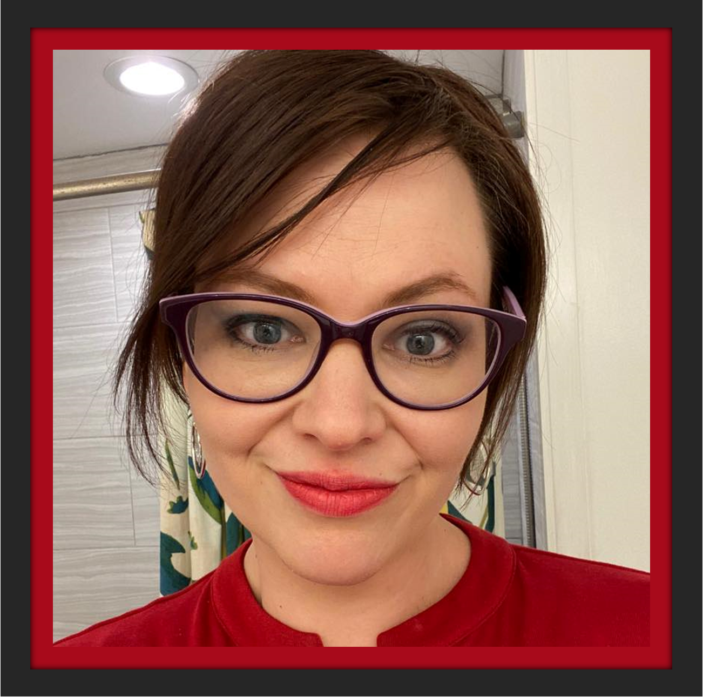

Vanessa Nuckolls | WDD 130
Hey there! I am Vanessa Nuckolls, designer of custom journals, follower of Bright Line Eating, member of The Church of Jesus Christ of Latter-day Saints, wife to my best friend, mother to four little loud learners, admirer of trees, seeker of coziness, and student of web design who lives peacefully in the Pacific Northwest.